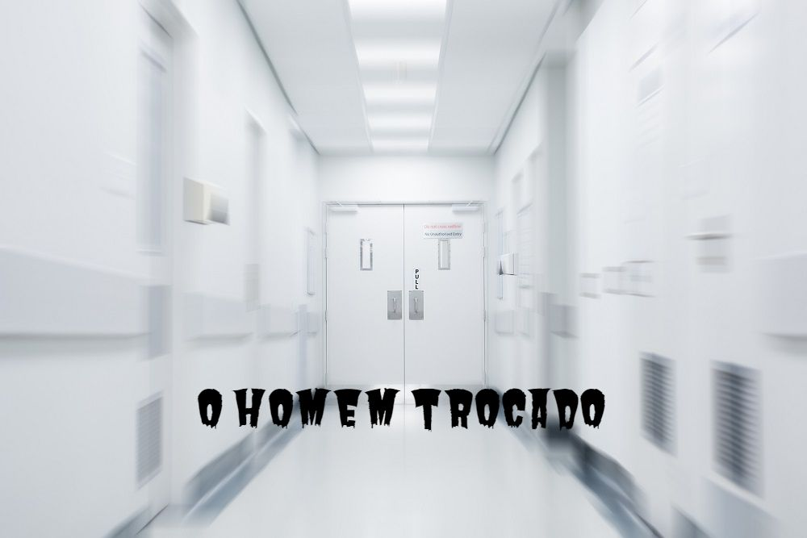

Luis Fernando Verissimo (1936) é um escritor brasileiro. Famoso por suas crônicas e contos de humor, é também jornalista, tradutor, roteirista de programas para televisão e músico. É filho do escritor Érico Verissimo. Infância e Juventude Luis Fernando Verissimo nasceu em Porto Alegre, Rio Grande do Sul, no dia 26 de setembro de 1936. Filho do escritor Érico Verissimo e de Mafalda Halfen Volpe viveu parte de sua infância nos Estados Unidos, época em que seu pai lecionou literatura brasileira nas universidades de Berkeley e de Oakland, entre 1941 e 1945. Em 1953 a família retornou aos Estados Unidos quando seu pai assumiu a direção do Departamento Cultural da União Pan-Americana, em Washington, e só retornaram ao Brasil em 1956. Nessa época, estudou no Roosevelt High School, em Washington. Desenvolveu o gosto pelo Jazz, chegando a ter aulas de saxofone.
O homem trocado
Luiz Fernando Veríssimo
O homem acorda da anestesia e olha em volta. Ainda está na sala de recuperação. Há uma enfermeira do seu lado. Ele pergunta se foi tudo bem.
– Tudo perfeito – diz a enfermeira, sorrindo.
– Eu estava com medo desta operação…
– Por quê? Não havia risco nenhum.
– Comigo, sempre há risco. Minha vida tem sido uma série de enganos…
E conta que os enganos começaram com seu nascimento. Houve uma troca de bebês no berçário e ele foi criado até os dez anos por um casal de orientais, que nunca entenderam o fato de terem um filho claro com olhos redondos. Descoberto o erro, ele fora viver com seus verdadeiros pais. Ou com sua verdadeira mãe, pois o pai abandonara a mulher depois que esta não soubera explicar o nascimento de um bebê chinês.